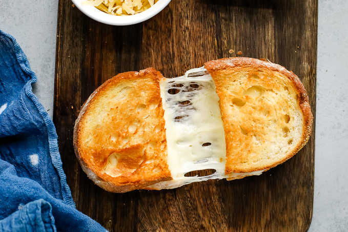

Grilled Cheese Sandwich

Description
What other to pair your tomato soup with than a hearty grilled cheese sandwich! Including the butter, this grilled cheese used four types of cheeses to achieve maximum gooiness and taste. Enjoy!
Ingredients
- Sourdough bread
- Sliced smoked provolone cheese
- Sliced white cheddar cheese
- Sliced havarti cheese
- 4 tablespoons butter, unsalted (you will have some leftover)
- 1-2 cloves minced garlic
- about 1/4 cup shredded mild cheddar cheese
Steps
- Take your butter, garlic, and shredded cheese, and mix together in a bowl. Set aside.
- Spread some of your butter across both slices of sourdough.
- Add the cheeses on top of one of the slices of bread, buttered side down (in this order): 2 slices of provolone, 1 slice of white cheddar, 1 slice of havarti. If you prefer more gooiness, use 2 slices of cheddar. Top with the second slice of bread, buttered side up.
- Heat a skillet over medium to high heat. Once heated, add your sandwich to the skillet.
- When the bread is nice and crusty, flip (will be about 3-4 minutes depending on how hot the skillet is). Do the same for the other side.
- Serve immediately.